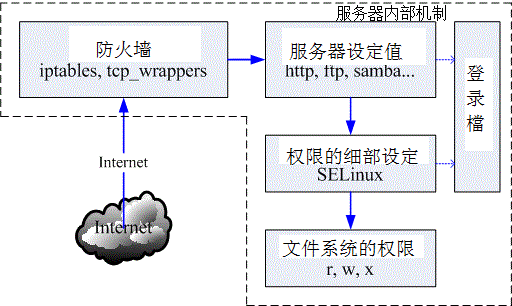

7.1 网络封包联机进入主机的流程
在这一章当中，我们要讨论的是，当来自一个网络上的联机要求想进入我们的主机时， 这个网络封包在进入主机实际取得数据的整个流程是如何？了解了整个流程之后， 你才会发现：原来系统操作的基本概念是如此的重要！ 而你也才会了解要如何保护你的主机安全吶！闲话少说，咱们赶紧来瞧一瞧先。
7.1.1 封包进入主机的流程
在第一章我们就谈过网络联机的流程， 当时举的例子是希望你可以理解为啥架设服务器需要了解操作系统的基本观念。在这一章当中，我们要将该流程更细致化说明， 因为，透过这个流程分析，你会知道为啥我们的主机需要进行过一些防护之后，系统才能够比较强壮。此外，透过第二章的网络概念解释后，你也了解了网络是双向的，服务器与客户端都得要有 IP:port 才能够让彼此的软件互相沟通。那么现在，假设你的主机是 WWW 服务器，透过底下的图标，网络封包如何进入你的主机呢？
 图 7.1-1、网络封包进入主机的流程
经过防火墙的分析：
Linux 系统有内建的防火墙机制，因此你的联机能不能成功，得要先看防火墙的脸色才行。预设的 Linux 防火墙就有两个机制，这两个机制都是独立存在的，因此我们预设就有两层防火墙喔。第一层是封包过滤式的 netfilter 防火墙， 另一个则是透过软件控管的 TCP Wrappers 防火墙。
封包过滤防火墙：IP Filtering 或 Net Filter 要进入 Linux 本机的封包都会先通过 Linux 核心的预设防火墙，就是称为 netfilter 的咚咚，简单的说，就是 iptables 这个软件所提供的防火墙功能。为何称为封包过滤呢？因为他主要是分析 TCP/IP 的封包表头来进行过滤的机制，主要分析的是 OSI 的第二、三、四层，主要控制的就是 MAC, IP, ICMP, TCP 与 UDP 的埠口与状态 (SYN, ACK...) 等。详细的资料我们会在第九章防火墙介绍。
第二层防火墙：TCP Wrappers 通过 netfilter 之后，网络封包会开始接受 Super daemons 及 TCP_Wrappers 的检验，那个是什么呢？ 说穿了就是 /etc/hosts.allow 与 /etc/hosts.deny 的配置文件功能啰。 这个功能也是针对 TCP 的 Header 进行再次的分析，同样你可以设定一些机制来抵制某些 IP 或 Port ，好让来源端的封包被丢弃或通过检验；
透过防火墙的管控，我们可以将大部分来自因特网的垃圾联机丢弃，只允许自己开放的服务的联机进入本机而已， 可以达到最基础的安全防护。
服务 (daemon) 的基本功能：
预设的防火墙是 Linux 的内建功能，但防火墙主要管理的是 MAC, IP, Port 等封包表头方面的信息，如果想要控管某些目录可以进入， 某些目录则无法使用的功能，那就得要透过权限以及服务器软件提供的相关功能了。举例来说，你可以在 httpd.conf 这个配置文件之内规范某些 IP 来源不能使用 httpd 这个服务来取得主机的数据， 那么即使该 IP 通过前面两层的过滤，他依旧无法取得主机的资源喔！但要注意的是， 如果 httpd 这支程序本来就有问题的话，那么 client 端将可直接利用 httpd 软件的漏洞来入侵主机，而不需要取得主机内 root 的密码！因此， 要小心这些启动在因特网上面的软件喔！
SELinux 对网络服务的细部权限控制：
为了避免前面一个步骤的权限误用，或者是程序有问题所造成的资安状况，因此 Security Enhanced Linux (安全强化 Linux) 就来发挥它的功能啦！简单的说，SELinux 可以针对网络服务的权限来设定一些规则 (policy) ，让程序能够进行的功能有限， 因此即使使用者的档案权限设定错误，以及程序有问题时，该程序能够进行的动作还是被限制的，即使该程序使用的是 root 的权限也一样。举例来说，前一个步骤的 httpd 真的被 cracker 攻击而让对方取得 root 的使用权，由于 httpd 已经被 SELinux 控制在 /var/www/html 里面，且能够进行的功能已经被规范住了，因此 cracker 就无法使用该程序来进行系统的进一步破坏啰。现在这个 SELinux 一定要开启喔！
使用主机的文件系统资源：
想一想，你使用浏览器连接到 WWW 主机最主要的目的是什么？当然就是读取主机的 WWW 数据啦！ 那 WWW 资料是啥？就是档案啊！^_^！所以，最终网络封包其实是要向主机要求文件系统的数据啦。 我们这里假设你要使用 httpd 这支程序来取得系统的档案数据，但 httpd 默认是由一个系统账号名称为 httpd 来启动的，所以：你的网页数据的权限当然就是要让 httpd 这支程序可以读取才行啊！如果你前面三关的设定都 OK ，最终权限设定错误，使用者依旧无法浏览你的网页数据的。
在这些步骤之外，我们的 Linux 以及相关的软件都可能还会支持登录文件记录的功能，为了记录历史历程， 以方便管理者在未来的错误查询与入侵检测，良好的分析登录档的习惯是一定要建立的，尤其是 /var/log/messages 与 /var/log/secure 这些个档案！虽然各大主要 Linux distribution 大多有推出适合他们自己的登录文件分析软件，例如 CentOS 的 logwatch ，不过毕竟该软件并不见得适合所有的 distributions ，所以鸟哥尝试自己写了一个 logfile.sh 的 shell script，你可以在底下的网址下载该程序：
好了，那么根据这些流程，你觉得 cracker 这些个坏蛋能够怎样的攻击我们的系统呢？得要先到对方想要怎么破坏， 我们才能够想办法来补强系统嘛！底下先讲讲基本的攻击手法啰。
7.1.2 常见的攻击手法与相关保护
我们由图 7.1-1 了解到数据传送到本机时所需要经过的几道防线后，那个权限是最后的关键啦！ 现在你应该比较清楚为何我们常常在基础篇里面一直谈到设定正确的权限可以保护你的主机了吧？ 那么 cracker 是如何透过上述的流程还能够攻击你的系统啊？底下就让我们来分析分析。
- 取得帐户信息后猜密码
由于很多人喜欢用自己的名字来作为帐户信息，因此账号的取得是很容易的！举例来说，如果你的朋友将你的 email address 不小心泄漏出去，例如： dmtsai@your.host.name 之类的样式，那么人家就会知道你有一部主机，名称为 your.host.name，且在这部主机上面会有一个使用者账号，账号名称为 dmtsai ，之后这个坏家伙再利用某些特殊软件例如 nmap 来进行你主机的 port scan 之后，嘿嘿！他就可以开始透过你主机有启动的软件功能来猜你这个账号的密码了！
另外，如果你常常观察你的主机登录文件，那你也会发现如果你的主机有启动 Mail server 的服务时， 你的登录档就会常常出现有些怪家伙尝试以一些奇怪的常见账号在试图猜测你的密码， 举例来说像：admin, administrator, webmaster .... 之类的账号，尝试来窃取你的私人信件。 如果你的主机真的有这类的账号，而且这类的账号还没有良好的密码规划，那就容易『中标』！ 唉！真是麻烦！所以我们常讲，系统账号千万不能给予密码，容易被猜密码啊！
这种猜密码的攻击方式算是最早期的入侵模式之一了，攻击者知道你的账号，或者是可以猜出来你的系统有哪些账号， 欠缺的就只是密码而已，因此他会『很努力的』去猜你的密码，此时，你的密码规划如果不好的话，很容易就被攻击了！ 主机也很容易被绑架啊！所以，良好的密码设置习惯是很重要的。
不过这种攻击方式比较费时，因为目前很多软件都有密码输入次数的限制，如果连续输入三次密码还不能成功的登入， 那该次联机就会被断线！所以，这种攻击方式日益减少，目前偶而还会看到就是了！这也是初级 cracker 会使用的方式之一。 那我们要如何保护呢？基本方式是这样的：
- 减少信息的曝光机会：例如不要将 Email Address 随意散布到 Internet 上头；
- 建立较严格的密码设定规则：包括 /etc/shadow, /etc/login.defs 等档案的设定， 建议你可以参考基础篇内的账号管理那一章来规范你的用户密码变更时间等等， 如果主机够稳定且不会持续加入某些账号时，也可以考虑使用 chattr 来限制账号 (/etc/passwd, /etc/shadow) 的更改；
完善的权限设定：由于这类的攻击方式会取得你的某个使用者账号的登入权限， 所以如果你的系统权限设定得宜的话，那么攻击者也仅能取得一般使用者的权限而已，对于主机的伤害比较有限啦！ 所以说，权限设定是重要的；
利用系统的程序漏洞『主动』攻击
由图 7.1-1 里面的第二个步骤中，我们知道如果你的主机有开放网络服务时， 就必须有启动某个网络软件嘛！我们也知道由于软件可能撰写方式的问题，可能产生一些会被 cracker 乱用的臭虫程序代码，而这些臭虫程序代码由于产生问题的大小，有分为 bug (臭虫，可能会造成系统的不稳定或当机) 与 Security (安全问题，程序代码撰写方式会导致系统的权限被恶意者所掌握) 等问题。
当程序的问题被公布后，某些较高阶的 cracker 会尝试撰写一些针对这个漏洞的攻击程序代码， 并且将这个程序代码放置到 cracker 常去的网站上面，藉以推销自己的『功力』..... 鸟哥要提醒的是，这种程序代码『是很容易被取得的』。 当更多『盈盈美黛子(台语，闲闲没事干之意)』取得这些程序代码后，他可能会想要『试一试这个攻击程序的威力』， 所以就拿来『扫射』一番，如果你八字比较轻，或者当天星座学家说你比较倒霉时，可能就会被不小心的攻击到...
这种攻击模式是目前最常见的，因为攻击者只要拿到攻击程序就可以进行攻击了， 『而且由攻击开始到取得你系统的 root 权限不需要猜密码， 不需要两分钟，就能够立刻入侵成功』，所以『盈盈美黛子』们最爱的就是这个咚咚了。 但这个玩意儿本身是靠『你主机的程序漏洞』来攻击的，所以，如果你的主机随时保持在实时更新的阶段， 或者是关闭大部分不需要的程序，那就可以躲避过这个问题。因此，你应该要这样做：
- 关闭不需要的网络服务：开的 port 越少，可以被入侵的管道越少， 一部主机负责的服务越单纯，越容易找出问题点。
- 随时保持更新：这个没话讲！一定要进行的！
关闭不需要的软件功能：举例来说，后面会提到的远程登录服务器 SSH 可以提供 root 由远程登录，那么危险的事情当然要给他取消啊！^_^
利用社交工程作欺骗
社交工程 (Social Engineering) 指的其实很简单，就是透过人与人的互动来达到『入侵』的目的！ @_@！人与人的互动可以入侵你的主机？鸟哥在呼咙你吗？当然不是。
近日在台湾的社会你不是常看到某些人会以『退税、中奖、花小钱买贵重物品』等名义来欺骗善良老百姓， 让老百姓掏出口袋里的金钱给那些可恶的金光党吗？社交工程也是类似的方法。在大公司里面， 或许你可能会接到这样的电话：『我是人事部门的经理，我的账号为何突然间不能登入了？ 你给我看一看，恩？干脆直接帮我另建一个账号，我告诉你我要的密码是....』。如果你一时不查给他账号密码的话， 你的主机可能就这样被绑走了～
社交工程的欺骗方法多的是，包括使用『好心的 email 通知』、『警告信函』、『中奖单』等等， 在在都是要欺骗你的账号密码，有的则利用钓鱼方式来欺骗你在某些恶意网站上面输入你的账号密码， 很讨厌的啦！举例来说，我们昆山计中的 email 常常会收到系统维护的信件，要我们将账号密码提交给系统管理员统一控管， 这当然是假的！计中根本不会寄出这样的信件啊！伤脑筋啦！所以要注意啊！那要如何防范呢？
- 追踪对谈者：不要一味的相信对方，你必须要有信心的向上呈报， 不要一时心慌就中了计！
不要随意透露账号/密码等信息：最好不要随意在 Internet 上面填写这些数据， 真的很危险的！因为在 Internet 上面，你永远不知道对方屏幕前面坐着的是谁？
利用程序功能的『被动』攻击
啥？除了主动攻击之外，还有所谓的被动攻击喔？没错啊，『系金ㄟ』！那如何作被动攻击呢？ 那就得要由『恶意网站』讲起了。如果你喜欢上网随意浏览的话，那么有的时候可能会连上一些广告很多， 或者是一堆弹出式窗口的网站，这些网站有时还会很好心的『提供你很多好用的软件自动下载与安装』的功能， 如果该网站是你所信任的，例如 Red Hat, CentOS, Windows 官网的话，那还好， 如果是一个你也不清楚他是干嘛的网站，那你是否要同意下载安装该软件？
如果你常常在注意一些网络危机处理的相关新闻时，常会发现 Windows 的浏览器 (IE) 有问题， 有时则是全部的浏览器 (Firefox, Netscap, IE...) 都会出现问题。那你会不会觉得奇怪啊， 怎么『浏览器也会有问题？』这是因为很多浏览器会主动的答应对方 WWW 主机所提供的各项程序功能， 或者是自动安装来自对方主机的软件，有时浏览器还可能由于程序发生安全问题， 让对方 WWW 浏览器得以传送恶意代码给你的主机来执行，嘿嘿！中标！
那你又会想啊，那我干嘛浏览那样的恶意网站？呵呵！总是会有些粗心大意的时候啊！如果你今天不小心收到一个 email ，里面告诉你你的银行账号有问题，希望你赶紧连上某个网页去看看你的账号是否在有问题的行列中，你会不会去？ 如果今天有个网络消息说某某网页在提供大特价商品，那你会不会去碰碰运气？ 都是可能的啊！不过，这也就很容易被对方攻击到了。
那如何防备啊？当然建立良好的习惯最重要了：
- 随时更新主机上的所有软件：如果你的浏览器是没有问题的， 那对方传递恶意代码时，你的浏览器就不会执行，那自然安全的多啊！
- 较小化软件的功能：举例来说，让你的收信软件不要主动的下载文件， 让你的浏览器在安装某些软件时，要通过你的确认后才安装，这样就比较容易克服一些小麻烦；
不要连接到不明的主机：其实鸟哥认为这个才最难！ 因为很多时候我们都用 google 在搜寻问题的解决之道啊，那你如何知道对方是否是骗人的？ 所以，前面两点防备还是很重要的！不要以为没有连接上恶意网站就不会有问题啊！
蠕虫或木马的 rootkit
rootkit 意思是说可以取得 root 权限的一群工具组 (kit)，就如同前面主动攻击程序漏洞的方法一样， rootkit 主要也是透过主机的程序漏洞。不过， rootkit 也会透过社交工程让用户下载、安装 rootkit 软件， 结果让 cracker 得以简单的绑架对方主机啊！
rootkit 除了可以透过上述的方法来进行入侵之外，rootkit 还会伪装或者是进行自我复制， 举例来说，很多的 rootkit 本身就是蠕虫或者是木马间谍程序。蠕虫会让你的主机一直发送封包向外攻击， 结果会让你的网络带宽被吃光光，例如 2001-2003 年间的 Nimda, Code Red 等等；至于木马程序 (Trojan Horse) 则会对你的主机进行开启后门 (开一个 port 来让 cracker 主动的入侵)，结果就是....绑架、绑架、绑架！
rootkit 其实挺不好追踪的，因为很多时候他会主动的去修改系统观察的指令， 包括 ls, top, netstat, ps, who, w, last, find 等等，让你看不到某些有问题的程序， 如此一来，你的 Linux 主机就很容易被当成是跳板了！有够危险！那如何防备呢？
- 不要随意安装不明来源的档案或者是不明网站的档案数据；
- 不要让系统有太多危险的指令：例如 SUID/SGID 的程序， 这些程序很可能会造成用户不当的使用，而使得木马程序有机可趁！
可以定时以 rkhunter 之类的软件来追查：有个网站提供 rootkit 程序的检查，你可以前往下载与分析你的主机： http://www.rootkit.nl/projects/rootkit_hunter.html
DDoS 攻击法 (Distributed Denial of Service )
这类型的攻击中文翻译成『分布式阻断服务攻击』，从字面上的意义来看，它就是透过分散在各地的僵尸计算机进行攻击， 让你的系统所提供的服务被阻断而无法顺利的提供服务给其他用户的方式。 这种攻击法也很要命，而且方法有很多，最常见的就属 SYN Flood 攻击法了！还记得我们在网络基础里面提到的，当主机接收了一个带有 SYN 的 TCP 封包之后，就会启用对方要求的 port 来等待联机，并且发送出回应封包 (带有 SYN/ACK 旗目标 TCP 封包)，并等待 Client 端的再次回应。
好了，在这个步骤当中我们来想一想，如果 cient 端在发送出 SYN 的封包后，却将来自 Server 端的确认封包丢弃，那么你的 Server 端就会一直空等，而且 Client 端可以透过软件功能，在短短的时间内持续发送出这样的 SYN 封包，那么你的 Server 就会持续不断的发送确认封包，并且开启大量的 port 在空等～呵呵！等到全部主机的 port 都启用完毕，那么.....系统就挂了！
更可怕的是，通常攻击主机的一方不会只有一部！他会透过 Internet 上面的僵尸网络 (已经成为跳板，但网站主却没有发现的主机) 发动全体攻击，让你的主机在短时间内就立刻挂点。 这种 DDoS 的攻击手法比较类似『玉石俱焚』的手段， 他不是入侵你的系统，而是要让你的系统无法正常提供服务！ 最常被用来作为阻断式服务的网络服务就是 WWW 了，因为 WWW 通常得对整个 Internet 开放服务。
这种攻击方法也是最难处理的，因为要嘛就得要系统核心有支持自动抵挡 DDoS 攻击的机制， 要嘛你就得要自行撰写侦测软件来判断！真是麻烦啊～而除非你的网站非常大， 并且『得罪不少人』，否则应该不会被 DDoS 攻击啦！ ^_^
- 其他
上面提到的都是比较常见的攻击方法，是还有一些高竿的攻击法啦，不过那些攻击法都需要有比较高的技术水准，例如 IP 欺骗。他可以欺骗你主机告知该封包来源是来自信任网域，而且透过封包传送的机制， 由攻击的一方持续的主动发送出确认封包与工作指令。如此一来，你的主机可能就会误判该封包确实有响应， 而且是来自内部的主机。
不过我们知道因特网是有路由的，而每部主机在每一个时段的 ACK 确认码都不相同， 所以这个方式要达成可以登入，会比较麻烦，所以说，不太容易发生在我们这些小型主机上面啦！ 不过你还是得要注意一下说：
- 设定规则完善的防火墙：利用 Linux 内建的防火墙软件 iptables 建立较为完善的防火墙，可以防范部分的攻击行为；
- 核心功能：这部份比较复杂，你必须要对系统核心有很深入的了解， 才有办法设定好你的核心网络功能。
登录文件与系统监控：你可以透过分析登录文件来了解系统的状况， 另外也可以透过类似 MRTG 之类的监控软件 来实时了解到系统是否有异常，这些工作都是很好的努力方向！
小结语
要让你的系统更安全，没有『三两三』是没办法『上梁山』的！我们也一直鼓吹， 『维护网站比架设网站还要重要』的观念！因为『一人得道鸡犬升天』，同样的道理：『一人中标全员挂点』， 不要以为你的主机没有啥重要数据，被入侵或被植入木马也没有关系， 因为我们的服务器通常会对内部来源的主机规范的较为宽松，如果你的主机在公司内部， 但是不小心被入侵的话，那么贵公司的服务器是否就会暴露在危险的环境当中了？
另外，在蠕虫很『发达』的年代，我们也会发现只要局域网络里面有一部主机中标，整个局域网络就会无法使用网络了， 因为带宽已经被蠕虫塞爆！如果老板发现他今天没有办法收信了，但无法收信的原因并非服务器挂点， 而是因为内部人员的某部个人计算机中了蠕虫，而那部主机中蠕虫的原因只是因为该使用者不小心去看了一下色情网站， 你觉得老板会高兴的跟该员工一起看色情网站还是 fire 掉该人员？
所以啊，主机防护还是很重要的！不要小看了！提供几个方向给大家思考看看吧：
- 建立完善的登入密码规则限制；
- 完善的主机权限设定；
- 设定自动升级与修补软件漏洞、及移除危险软件；
- 在每项系统服务的设定当中，强化安全设定的项目；
- 利用 iptables, TCP_Wrappers 强化网络防火墙；
- 利用主机监控软件如 MRTG 与 logwatch 来分析主机状况与登录文件；
7.1.3 主机能作的保护： 软件更新、减少网络服务、启动 SELinux
根据本章前面的分析，现在你知道封包的流向以及主机基本需要进行的防护了。不过你或许还是有疑虑，那就是， 既然我都已经有了防火墙，那么权限的控管啦、密码的严密性啦、服务器软件的更新啦、SELinux 啦等等的， 是否就没有这么重要呢？毕竟它是封包进入的第一关卡！这关把关严格，后续可以稍微宽松吗？其实...你错了！ 对于开放某些服务的服务器来说，你的防火墙『根本跟屁一样，是没有用的！』怎么说呢？
- 软件更新的重要性
让我们瞧一瞧图 7.1-1 的流程好了，假设你需要对全世界开放 WWW ，那么提供 WWW 服务的 httpd 这只程序就得要执行，并且，你的防火墙得要打开 port 80 让全世界都可以连接到你的 port 80 ，这样才是一部合理的 WWW 服务器嘛！问题来啦，如果 httpd 这只程序有资安方面的问题时，请问防火墙有没有效用？当然没有！因为防火墙原本就得要开放 port 80 啊！此时防火墙对你的 WWW 一点防护也没有。那怎办？
没啥好说的，就是软件持续更新到最新就对了！因为自由软件就是有这个好处，当你的程序有问题时， 开发商会在最短的时间内取得志工提供的修补程序 (patch) ，并将该程序代码补充到软件更新数据库中， 让一般用户可以直接透过网络来自动更新。因此，要克服这个服务器软件的问题，更新系统软件就对了。
但是你得要注意，你的系统能否更新软件与系统的版本有关！举例来说，2003 年左右发布的 Red Hat 9 目前已经没有支持了， 如果你还是执意要安装 Red Hat 9 这套系统，那么很抱歉，你得要手动将系统内的软件透过 make 动作来重新编译到最新版， 因此，很麻烦～同样的， Fedora 最新版虽然有提供网络自动更新，但是 Fedora 每一个版本的维护期间较短， 你可能需要常常大幅度的变更你的版本，这对服务器的设定也不妥当。此时一个企业版本的 Linux distributions 就很重要啦！ 举例来说，鸟站的主机截至目前为止 (2011/07) 还是使用 CentOS 4.x ，因为这个版本目前还是持续维护中。 这对服务器来说，是相当重要的！稳定与安全比什么都重要！
想要了解软件的安全通报，可以参考如下的网站数据喔！
- 台湾计算机危机处理小组(TWCERT)：http://www.cert.org.tw/
Red Hat 的官方说明：https://www.redhat.com/support/
认识系统服务的重要性
再回到图 7.1-1 当中，同时思考一下第二章网络基础里面谈到的网络联机是双向这件事， 我们会得到一个答案，那就是在图 7.1-1 内的第二个步骤中，如果能够减少服务器上面的监听埠口， 此时因为服务器端没有可供联机的埠口，客户端当然也就无法联机到服务器端嘛！那么如何限制服务器开启的埠口呢？ 第二章就谈到过了，关闭埠口的方式是透过关闭网络服务。没错啊！所以啰，此时能够减少网络服务就减少，可以避免很多不必要的麻烦。
- 权限与 SELinux 的辅助
根据网络上面多年来的观察，很多朋友在发生权限不足方面的问题后，都会直接将某个目录直接修订成为 chmod -R 777 /some/path/。 如果这部主机只是测试用的没有上网提供服务，那还好。如果有上网提供某些服务时，那可就伤脑筋了！因为目录的 wx 权限设定一起后， 代表该身份可以进行新增与删除的动作。偏偏你又给 777 (rwxrwxrwx) ，代表所有的人都可以在该目录下进行新增与删除！ 万一不小心某支程序被攻击而被取得操作权，想想看，你的系统不就可能被写入某些可怕的东西了吗？ 所以不要随便设定权限啊！
那如果由于当初规划的账号身份与群组设定的太杂乱，导致无法使用单纯的三种身份的三种权限来设定你的系统时，那该如何是好？ 没关系的，可以透过 ACL 这个好用的东西！ ACL 可以针对单一账号或单一群组进行特定的权限设定，相当好用喔！ 他可以辅助传统 Unix 的权限设定方面的困扰哩。详情请参考基础篇的内容呦！
那如何避免用户乱用系统，乱设定权限呢？这个时候就得要透过 SELinux 来控制了。SELinux 可以在程序与档案之间再加入一道细部的权限控制，因此，即使程序与档案的权限符合了操作动作，但如果程序与档案的 SELinux 类型 (type) 不吻合时，那么该程序就无法读取该档案喔！ 此外，我们的 CentOS 也针对了某些常用的网络服务制订了许多的档案使用规则 (rule)，如果这些规则没有启用， 那么即使权限、SELinux 类型都对了，该网络服务的功能还是无法顺利的运作喔！
根据这样的分析，我们可以知道，随时更新系统软件、限制联机端口以及透过启动 SELinux 来限制网络服务的权限，经过这三个简单的步骤，你的系统将可以获得相当大的保护！当然啦， 后续的防火墙以及系统注册表档分析工作仍是需要进行的。本章后续将依据这三点来深入介绍。